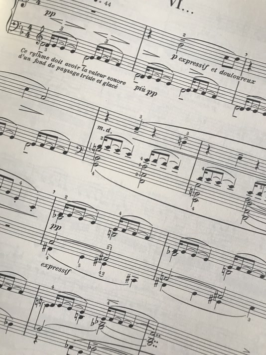
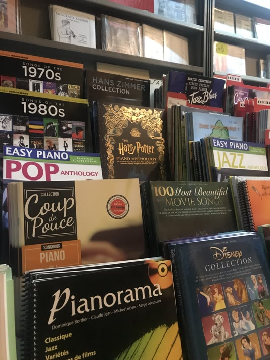
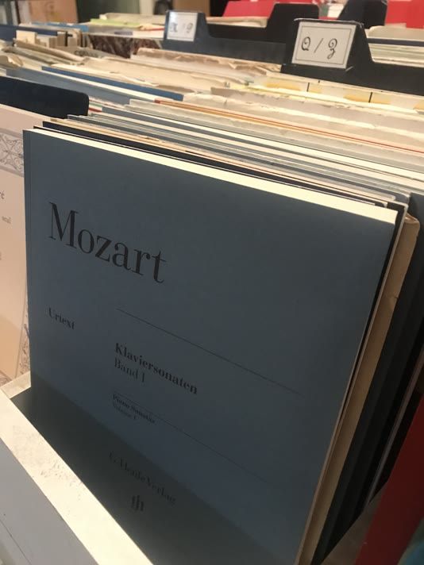
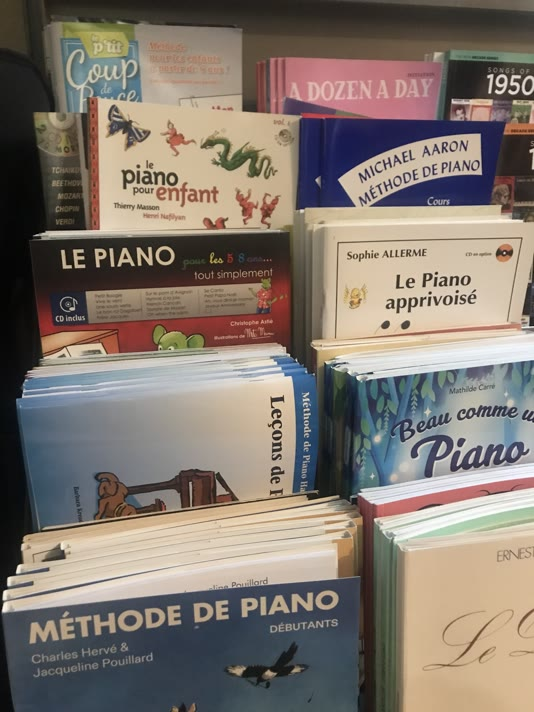
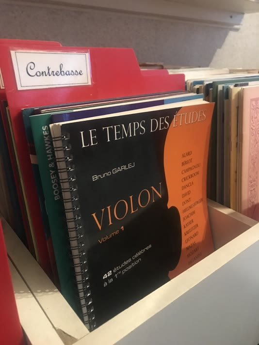
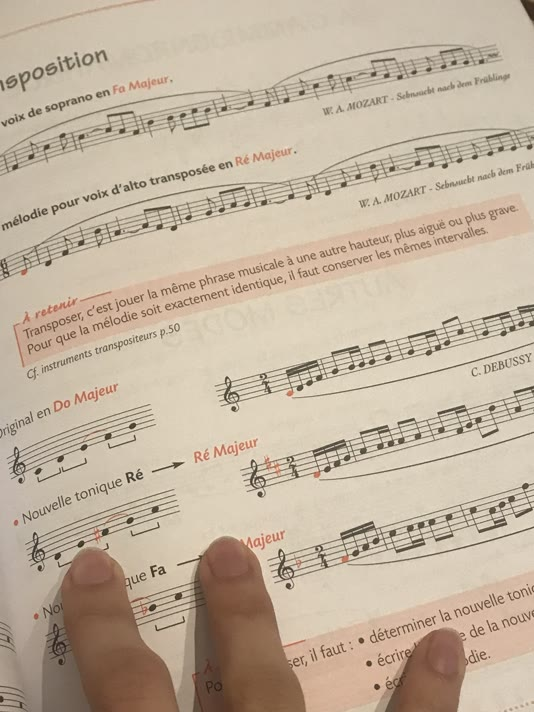

Librairie musicale
Rueil Musique, c'est aussi une importante librairie musicale. Partitions classique répertoire, études, méthodes, chant, rock, blues, jazz, latino, etc.
Vous trouverez l'ensemble de notre catalogue en magasin. Il est également possible de commander sur place ou par téléphone !
Nos fournisseurs : Billaudot, Hal Leonard, Henle, Henry Lemoine, etc.
N'hésitez pas à nous contacter directement pour savoir si la référence que vous cherchez est disponible, le cas échéant nous pourrions éventuellement la commander.
Nous contacter
Recueils

Les Beatles, Ludovico Einaudi, Hans Zimmer, etc. Retrouvez nos nombreux recueils de musiques de films, de musiques des années 80, d'artistes-interprètes, et plein d'autres !
Parmi nos best-sellers :
| Titre | Auteur | Éditeur |
|---|---|---|
| De Bach à nos jours | Jacqueline Pouillard et Charles Hervé | Henry Lemoine |
| The New Decade Series | Divers | Hal Leonard |
| Hans Zimmer Collection | Hans Zimmer | Alfred |
| The Best Of - Easy Guitare | Nirvana | Hal Leonard |
| Rock-Hits pour Guitare Classique | Divers | Schott |
Partitions

Quelques exemples de partitions disponibles au magasin ci-dessous :
| Titre | Auteur | Éditeur |
|---|---|---|
| Children's Corner | Debussy | Henle |
| Nocturnes | Chopin | Peters |
| Inventions à 2 et 3 voix | Johann Sebastian Bach | Henry Lemoine |
| Gnossiennes | Erik Satie | Henle |
| Lettre à Élise | Beethoven | Henle |
Méthodes

Fournisseur des conservatoires et écoles de musique depuis 1996, Rueil Musique propose un large éventail de méthodes adaptées pour tous instruments et tous niveaux !
Dans notre hall of fame :
| Titre | Auteur | Éditeur |
|---|---|---|
| Méthode de piano | Charles Hervé & Jacqueline Pouillard | Henry Lemoine |
| Le piano pour adulte débutant | Thierry Masson & Henri Nafilyan | Henry Lemoine |
| Les leçons de piano Volume 1 | Charles Hervé & Jacqueline Pouillard | Henry Lemoine |
| Je deviens guitariste | Thierry Tisserand | Henry Lemoine |
Études

Parmi nos études les plus populaires, retrouvez :
| Titre | Auteur | Éditeur |
|---|---|---|
| 36 Études mélodiques | Dancla | Combre |
| La clarinette classique Volume A | Jacques Lancelot | Combre |
| Premières études (101) | Charles Hervé & Jacqueline Pouillard | Henry Lemoine |
| Les études Mezzo Forte | Béatrice Quoniam | Henry Lemoine |
| Etude complète des gammes | Gariboldi | Leduc |
Solfège

Retrouvez quelques exemples des livres de solfège les plus vendus ci-dessous !
| Titre | Auteur | Éditeur |
|---|---|---|
| On aime la FM | Marie-Hélène Siciliano | H Cube |
| La Théorie en Musique | Chantal Boulay et Dominique Millet | Billaudot |
| Manuel pratique | Georges Dandelot | Eschig |
| Mon jardin musical | Marie-Hélène Siciliano et Joëlle Zarco | H Cube |
| Ecoutez Voir ! | Emmanuel Gaultier | Billaudot |
Editeurs avec lesquels nous travaillons
| Éditeur | |
|---|---|
| Alfred | ☑️ |
| Billaudot | ☑️ |
| Bärenreiter | ☑️ |
| Breitkopf & Härtel | ☑️ |
| Combre | ☑️ |
| Coup de pouce | ☑️ |
| Dux | ☑️ |
| Günter Henle Verlag | ☑️ |
| Hal Leonard | ☑️ |
| Henry Lemoine | ☑️ |
| Leduc | ☑️ |
| Peters | ☑️ |
| Robert Martin | ☑️ |
| Schott | ☑️ |
| Etc. | Contactez-nous pour vérifier la disponibilité |